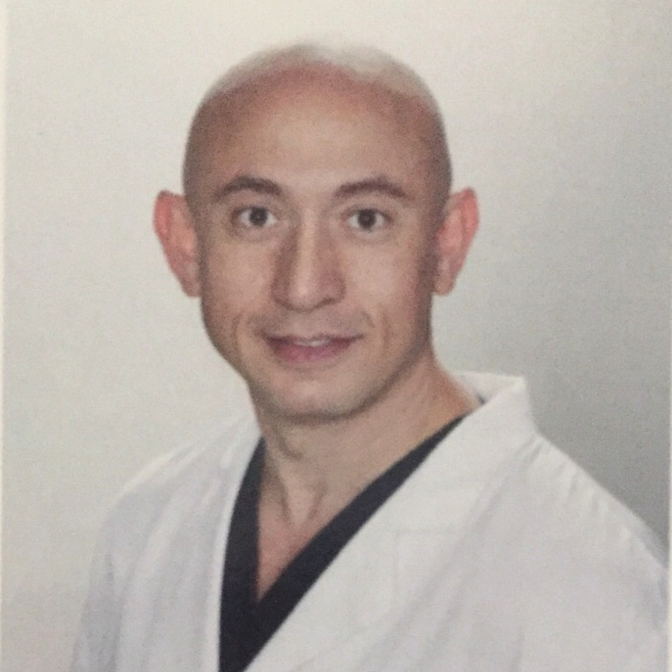

Hassan Tavakkoli, DO, Ph.D.
Dr. Tavakkoli graduated from Michigan State University where he earned his Medical Degree and Ph.D. in Microbiology. He did his medical ophthalmology residency in Chicago and followed with a fellowship in cornea and refractive surgery in Indianapolis where he was involved in the original Laser Vision Correction Trials.
Dr. Tavakkoli has performed all types of vision correction, including: RK, AK, ALK, PRK, LASIK and LASEK. He has been involved in research and has published a number of articles in several prestigious ophthalmology journals. Dr. Tavakkoli is board certified and has been practicing and performing vision correction surgery in South Florida for the past ten years.
At South Florida Laser Eye Center, we are proud to offer our patients LASEK, one of the safest laser vision correction procedures available. All of our LASEK procedures are performed with the VISX laser, world-renowned for its precision and safety.
Rashid Taher, MD
Dr. Taher is a Board Cer-tified Ophthalmologist with sub-specialty training in Vitreo-retinal surgery. Dr. Taher completed a two year vitreo-retinal fellow-ship at Boston University resi-dency at the University Medical Center. He finished his ophthalmology resi-of Florida and his medi-r . cal school training at the George Washington Uni-versity Medical School. He received his Bachelor of arts degree in history at the University of Michigan.
Dr. Taher has authored several chapters in the text "Retinal Disorders and Acute Visual Loss." He has been involved in the research of surgical treatment of retinal vascular occlusions and diode laser use in macular degeneration. He also has an interest in ocular trauma and the management of intraocular foreign bodies. He is a fellow of the American Academy of Ophthalmology and the American Society of Cataract and Refractive surgery. He is also a member of the American Society of Retina Specialist.
He also serves as a consultant for Paramount International, a medical supply and distribution company based in Amman, Jordan. Dr Taher also sits on the Board of Directors for Pediatric Radiology of America and Cardiac America--two telemedicine companies. If you are interested in additional information about Dr. Taher, our practice or Retina-Vitreous Disease, please visit our Website at: retinamaculamiami.com.
Gary Shienbaum
Dr. Gary Shienbaum South Florida native and Phi Kappa Phi and Cum Laude graduate of the University of Florida. He received his doctor of medicine degree Summa Cum Laude from Jefferson Medical College of Thomas Jefferson University, where he was elected to the Alpha Omega Alpha Honor Medical Society. He performed his medical internship at Albert Einstein Medical Center and his ophthalmology residency at the prestigious Wills Eye Institute in Philadelphia, PA. He then completed a two-year fellowship in vitreoretinal diseases and surgery at the Bascom Palmer Eye Institute in Miami, FL.
Dr. Shienbaum is a diplomate of the American Board of Ophthalmology. He is an active member of the American Academy of Ophthalmology, American Society of Retina Specialists, Association for Research in Vision and Ophthalmology, and American Medical Association.